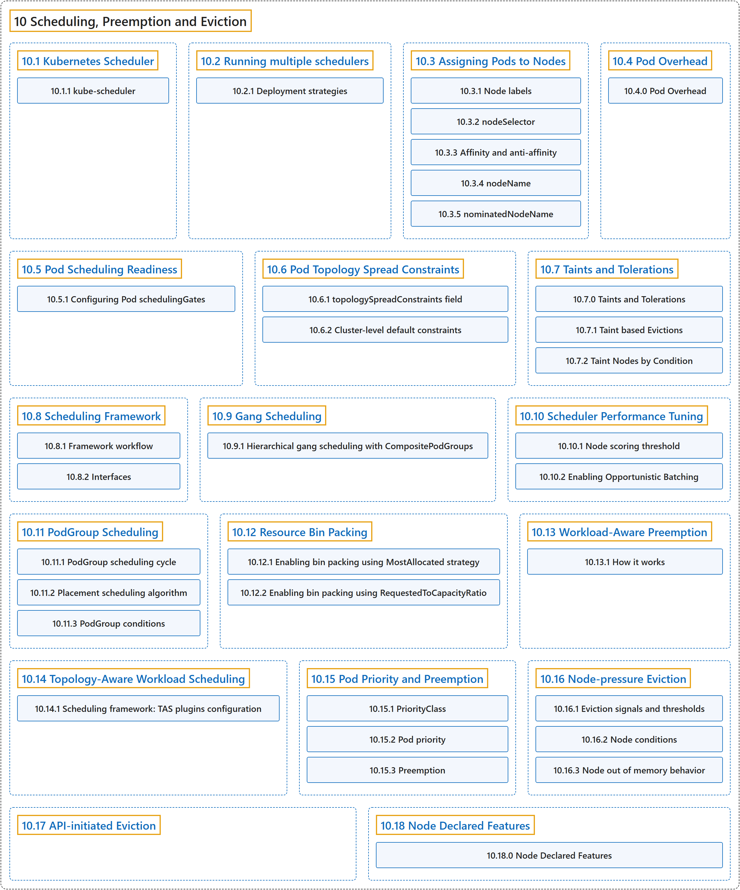

10 Scheduling, Preemption and Eviction
Classification

Glossary
| Term | Definition | 中文翻译 | Source |
|---|---|---|---|
| 10 Scheduling, Preemption and Eviction 调度、抢占与驱逐 |
(context) "In Kubernetes, scheduling refers to making sure that Pods are matched to Nodes so that the kubelet can run them." | （语境）在 Kubernetes 中，调度是指确保 Pod 被匹配到 Node，以便 kubelet 能够运行它们。 | The Kubernetes Authors, n.d.-p, "Scheduling, Preemption and Eviction", para. 1 |
| 10.1 Kubernetes Scheduler Kubernetes 调度器 |
"A scheduler watches for newly created Pods that have no Node assigned." | 调度器监视尚未分配节点的新建 Pod。 | The Kubernetes Authors, n.d.-d, "Scheduling overview", para. 1 |
| 10.2 Running multiple schedulers 运行多个调度器 |
(context) "Kubernetes allows you to run multiple schedulers within a single cluster." | （语境）Kubernetes 允许你运行多个调度器，在单个集群之内。 | The Kubernetes Authors, n.d.-m, "Running multiple schedulers", para. 1 |
| 10.3 Assigning Pods to Nodes 将 Pod 分配给节点 |
(context) "You can constrain a Pod so that it is restricted to run on particular node(s), or to prefer to run on particular nodes." | （语境）你可以约束一个 Pod，使它被限制在特定节点上运行，或优先在特定节点上运行。 | The Kubernetes Authors, n.d.-b, "Assigning Pods to Nodes", para. 1 |
| 10.4 Pod Overhead Pod 开销 |
(context) "When you run a Pod on a Node, the Pod itself takes an amount of system resources." | （语境）在节点上运行 Pod 时，Pod 本身会占用一定的系统资源。 | The Kubernetes Authors, n.d.-g, "Pod Overhead", para. 1 |
| 10.5 Pod Scheduling Readiness Pod 调度就绪 |
(context) "Pods were considered ready for scheduling once created." | （语境）过去，Pod 被视为一经创建就可以调度。 | The Kubernetes Authors, n.d.-i, "Pod Scheduling Readiness", para. 1 |
| 10.6 Pod Topology Spread Constraints Pod 拓扑分布约束 |
"You can use topology spread constraints to control how Pods are spread across your cluster among failure-domains such as regions, zones, nodes, and other user-defined topology domains." | 你可以使用拓扑分布约束来控制 Pod 如何在集群中分布于各故障域之间，例如区域、可用区、节点以及其他用户定义的拓扑域。 | The Kubernetes Authors, n.d.-j, "Pod Topology Spread Constraints", para. 1 |
| 10.7 Taints and Tolerations 污点与容忍度 |
(context) "Tolerations are applied to pods." | （语境）容忍度会应用于 Pod。 | The Kubernetes Authors, n.d.-q, "Taints and Tolerations", para. 2 |
| 10.8 Scheduling Framework 调度框架 |
"The scheduling framework is a pluggable architecture for the Kubernetes scheduler." | 调度框架是一种可插拔架构，面向 Kubernetes 调度器。 | The Kubernetes Authors, n.d.-o, "Scheduling Framework", para. 1 |
| 10.9 Gang Scheduling 成组调度 |
"Gang scheduling ensures that a group of Pods are scheduled on an "all-or-nothing" basis." | 成组调度确保一组 Pod 以 “全有或全无”的方式被调度。 | The Kubernetes Authors, n.d.-c, "Gang Scheduling", para. 3 |
| 10.10 Scheduler Performance Tuning 调度器性能调优 |
(context) "kube-scheduler is the Kubernetes default scheduler." | （语境）kube-scheduler 是 Kubernetes 的默认调度器。 | The Kubernetes Authors, n.d.-n, "Scheduler Performance Tuning", para. 1 |
| 10.11 PodGroup Scheduling PodGroup 调度 |
(context) "The placement scheduling algorithm is an alternative PodGroup scheduling algorithm, which uses scheduling plugins to find the optimal placement for the considered PodGroup." | （语境）放置调度算法是另一种 PodGroup 调度算法，它使用调度插件为所考虑的 PodGroup 找到最优放置。 | The Kubernetes Authors, n.d.-k, "Placement scheduling algorithm", para. 3 |
| 10.12 Resource Bin Packing 资源装箱 |
(context) "In the scheduling-plugin NodeResourcesFit of kube-scheduler, there are two scoring strategies that support the bin packing of resources:" |
（语境）在 kube-scheduler 的调度插件 NodeResourcesFit 中，有两种打分策略支持资源装箱： |
The Kubernetes Authors, n.d.-l, "Note:", para. 2 |
| 10.13 Workload-Aware Preemption 工作负载感知抢占 |
(context) "When this feature is enabled, the scheduler treats the PodGroup as a single preemptor unit, rather than evaluating individual pods from a PodGroup in isolation." | （语境）启用此功能后，调度器把 PodGroup 视作一个单一的抢占单元，而不是孤立地评估 PodGroup 中的各个 Pod。 | The Kubernetes Authors, n.d.-s, "Note:", para. 3 |
| 10.14 Topology-Aware Workload Scheduling 拓扑感知工作负载调度 |
"Topology-Aware Scheduling (TAS) is a placement scheduling algorithm that allows finding the optimal placement for the considered PodGroup" | 拓扑感知调度（TAS）是一种放置调度算法，能找到所考虑的 PodGroup 的最优放置 | The Kubernetes Authors, n.d.-r, "Topology-Aware Workload Scheduling", para. 3 |
| 10.15 Pod Priority and Preemption Pod 优先级与抢占 |
(context) "Pods can have priority." | （语境）Pod 可以有优先级。 | The Kubernetes Authors, n.d.-h, "Pod Priority and Preemption", para. 1 |
| 10.16 Node-pressure Eviction 节点压力驱逐 |
"Node-pressure eviction is the process by which the kubelet proactively terminates pods to reclaim resource on nodes." | 节点压力驱逐是这样的过程：kubelet 主动终止 Pod，以回收节点上的资源。 | The Kubernetes Authors, n.d.-f, "Node-pressure Eviction", para. 1 |
| 10.17 API-initiated Eviction API 发起的驱逐 |
"API-initiated eviction is the process by which you use the Eviction API to create an Eviction object that triggers graceful pod termination." |
API 发起的驱逐是这样的过程：你使用 Eviction API 创建一个 Eviction 对象，从而触发 Pod 体面终止。 |
The Kubernetes Authors, n.d.-a, "API-initiated Eviction", para. 1 |
| 10.18 Node Declared Features 节点声明的特性 |
"A declared feature is a string that a node lists in the .status.declaredFeatures field of the Node object." |
声明的特性是节点列出的一个字符串，位于 Node 对象的 .status.declaredFeatures 字段中。 |
The Kubernetes Authors, n.d.-e, "How it works", para. 1 |
References
The Kubernetes Authors. (n.d.-a). API-initiated Eviction. Kubernetes Documentation. Retrieved October 31, 2026, from https://kubernetes.io/docs/concepts/scheduling-eviction/api-eviction/
The Kubernetes Authors. (n.d.-b). Assigning Pods to Nodes. Kubernetes Documentation. Retrieved October 31, 2026, from https://kubernetes.io/docs/concepts/scheduling-eviction/assign-pod-node/
The Kubernetes Authors. (n.d.-c). Gang Scheduling. Kubernetes Documentation. Retrieved October 31, 2026, from https://kubernetes.io/docs/concepts/scheduling-eviction/gang-scheduling/
The Kubernetes Authors. (n.d.-d). Kubernetes Scheduler. Kubernetes Documentation. Retrieved October 31, 2026, from https://kubernetes.io/docs/concepts/scheduling-eviction/kube-scheduler/
The Kubernetes Authors. (n.d.-e). Node Declared Features. Kubernetes Documentation. Retrieved October 31, 2026, from https://kubernetes.io/docs/concepts/scheduling-eviction/node-declared-features/
The Kubernetes Authors. (n.d.-f). Node-pressure Eviction. Kubernetes Documentation. Retrieved October 31, 2026, from https://kubernetes.io/docs/concepts/scheduling-eviction/node-pressure-eviction/
The Kubernetes Authors. (n.d.-g). Pod Overhead. Kubernetes Documentation. Retrieved October 31, 2026, from https://kubernetes.io/docs/concepts/scheduling-eviction/pod-overhead/
The Kubernetes Authors. (n.d.-h). Pod Priority and Preemption. Kubernetes Documentation. Retrieved October 31, 2026, from https://kubernetes.io/docs/concepts/scheduling-eviction/pod-priority-preemption/
The Kubernetes Authors. (n.d.-i). Pod Scheduling Readiness. Kubernetes Documentation. Retrieved October 31, 2026, from https://kubernetes.io/docs/concepts/scheduling-eviction/pod-scheduling-readiness/
The Kubernetes Authors. (n.d.-j). Pod Topology Spread Constraints. Kubernetes Documentation. Retrieved October 31, 2026, from https://kubernetes.io/docs/concepts/scheduling-eviction/topology-spread-constraints/
The Kubernetes Authors. (n.d.-k). PodGroup Scheduling. Kubernetes Documentation. Retrieved October 31, 2026, from https://kubernetes.io/docs/concepts/scheduling-eviction/podgroup-scheduling/
The Kubernetes Authors. (n.d.-l). Resource Bin Packing. Kubernetes Documentation. Retrieved October 31, 2026, from https://kubernetes.io/docs/concepts/scheduling-eviction/resource-bin-packing/
The Kubernetes Authors. (n.d.-m). Running multiple schedulers. Kubernetes Documentation. Retrieved October 31, 2026, from https://kubernetes.io/docs/concepts/scheduling-eviction/running-multiple-schedulers/
The Kubernetes Authors. (n.d.-n). Scheduler Performance Tuning. Kubernetes Documentation. Retrieved October 31, 2026, from https://kubernetes.io/docs/concepts/scheduling-eviction/scheduler-perf-tuning/
The Kubernetes Authors. (n.d.-o). Scheduling Framework. Kubernetes Documentation. Retrieved October 31, 2026, from https://kubernetes.io/docs/concepts/scheduling-eviction/scheduling-framework/
The Kubernetes Authors. (n.d.-p). Scheduling, Preemption and Eviction. Kubernetes Documentation. Retrieved October 31, 2026, from https://kubernetes.io/docs/concepts/scheduling-eviction/
The Kubernetes Authors. (n.d.-q). Taints and Tolerations. Kubernetes Documentation. Retrieved October 31, 2026, from https://kubernetes.io/docs/concepts/scheduling-eviction/taint-and-toleration/
The Kubernetes Authors. (n.d.-r). Topology-Aware Workload Scheduling. Kubernetes Documentation. Retrieved October 31, 2026, from https://kubernetes.io/docs/concepts/scheduling-eviction/topology-aware-scheduling/
The Kubernetes Authors. (n.d.-s). Workload-Aware Preemption. Kubernetes Documentation. Retrieved October 31, 2026, from https://kubernetes.io/docs/concepts/scheduling-eviction/workload-aware-preemption/